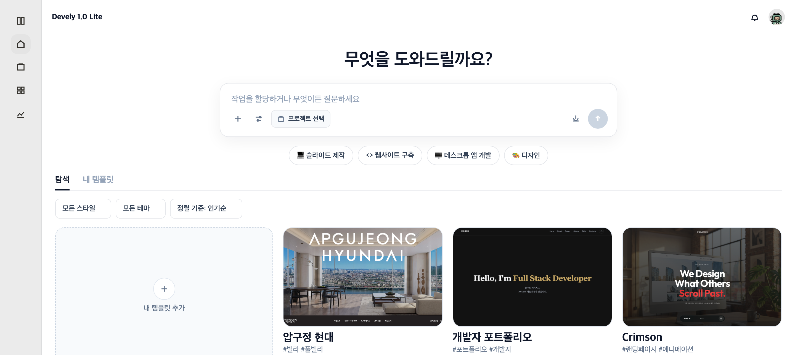

ㅇ Decision Agent 작업 처리 알고리즘
Decision Agent 작업 처리 알고리즘은 사용자가 입력한 자연어 한 줄을 받아 프로젝트 연결 여부를 먼저 확인한다. 프로젝트가 없으면 False를 반환하고 “먼저 프로젝트를 생성해 주세요.”를 띄운 뒤 처리를 중단한다. 프로젝트가 연결되어 있으면 요청을 세션에 저장하고 제목을 자동으로 만든 다음, Decision Agent가 코드·배포·도메인·인프라로 나눈다. 이 과정은 화면에 보이지 않으며, 나중에 승인창에 한 줄로만 요약된다. 코드 변경이면 preview 브랜치에 커밋하고 Docker 컨테이너에서 설치·빌드·실행까지 한 뒤 내부 패널로 미리보기를 보여 True를 반환한다. 바깥으로 여는 preview URL은 기본적으로 만들지 않으며, 승인해 도 이 시점에 main에는 반영하지 않는다.
Decision Agent 작업 처리 알고리즘에서 True 값을 반환할 때,

Decision Agent 작업 처리 알고리즘에서 False 값을 반환할 때,
